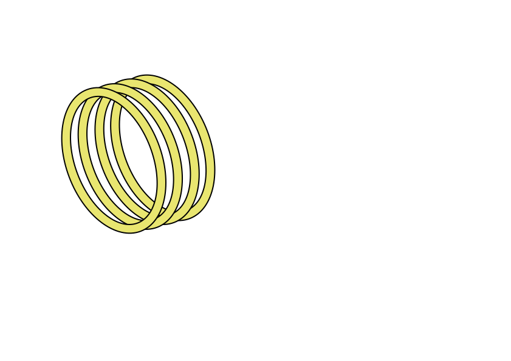
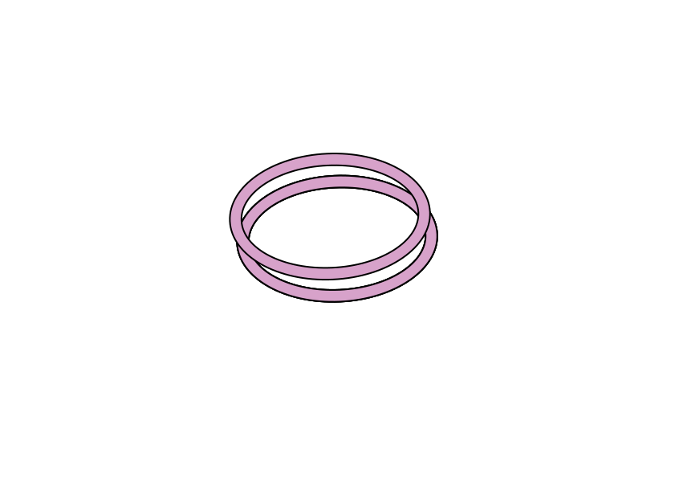
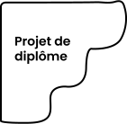
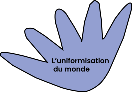
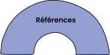
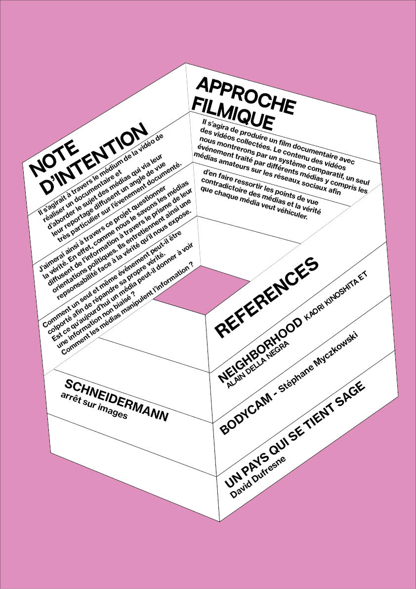

Héloïse Gaben





note d'intention
 Il s'agit
Il s'agit
note d'intention
Il s'agit
Il s'agit
note d'intention
 note d'intention
note d'intention
 Quelques références qui nourrissent ma pratique.
Désordre de Philippe Dejonckheere
Quelques références qui nourrissent ma pratique.
Désordre de Philippe Dejonckheere
Note d'intention
Il s’agirait à travers le médium de la vidéo de réaliser un documentaire et d’aborder le sujet des médias qui via leur leur reportage diffusent un angle de vue très particulier sur l’évenement documenté. J’aimerai ainsi
à travers ce projet questionner la vérité. En effet, comme nous le savons les médias diffusent de l’information à travers le prisme de leur orientations politiques. Ils entretiennent ainsi une repsonsabilité face à la vérité qu’il nous expose.
Comment un seul et même événement peut-il être colporté afin de répandre sa propre vérité. Est ce qu’aujourd’hui un média peut-il donner à voir une information non biaisé ? Comment les médias manipulent l’information ?
Approche filmique
Il s’agira de produire un film documentaire avec des vidéos collectées. Le contenu des vidéos nous montrerons par un système comparatif, un seul événement traité par différents médias y compris les médias amateurs sur les réseaux sociaux afin d’en faire
ressortir les points de vue contradictoire des médias et la vérité que chaque média veut véhiculer.
Références
Un pays qui se tient sage, documentaire de David Dufresne
Bodycam, documentaire de Stéphane Myczkowski
SCHNEIDERMANN, arrêt sur images
NEIGHBORHOOD Kaori Kinoshita et Alain Della Negra

 Bonjour, je m'appelle Héloïse Gaben, je suis actuellement en troisième d'un DNA design mention design graphique multimédia à l'école supérieure d'art et de design des Pyrénées à Pau. Ma pratique se base sur des interrogations autour de la culture
autour des enjeux que peut causer la bascule au numériques. Mon document écrit traite de la représentzito que l'on a soi et de notre raport que l'on a à l'avatar dans les jeu vidéos. Je travaille et j'aimerai poursuivre ma pratique à travers
la question des images numériques qui nous entourent et notamment comment les images créee par des intelligences articificielles supposent des enjeux politiques.
Bonjour, je m'appelle Héloïse Gaben, je suis actuellement en troisième d'un DNA design mention design graphique multimédia à l'école supérieure d'art et de design des Pyrénées à Pau. Ma pratique se base sur des interrogations autour de la culture
autour des enjeux que peut causer la bascule au numériques. Mon document écrit traite de la représentzito que l'on a soi et de notre raport que l'on a à l'avatar dans les jeu vidéos. Je travaille et j'aimerai poursuivre ma pratique à travers
la question des images numériques qui nous entourent et notamment comment les images créee par des intelligences articificielles supposent des enjeux politiques.
L’uniformisation du monde - Edition
Il s’agissait ici de créer une édition dont le texte est l’uniformisation du monde de Stefan Sweig éctit en 1946 dont l’iconographie choisi est ici celle du film Koyaanisqatsi qui est un film documentaire et contemplatifréalisé par Godfrey Redgio. La
photographie du film est relativement intéressante de par les timelapse voulu par le réalisateur. Il propose une capture vidéo dont l’intervalle de capture est rallongé. Le rythme est travaillé selon temps inversé ou plus ou moins lent. Avec
des cadrages sérrés ou d’ensemble. J’ai décidé de confronter ainsi le texte de Stefan Sweig et l’iconographie de Koyaanisqatsi car il est question d’exprimer le rythme éffréné par lequel la société atuelle évolue. La globalisation a un impact
certain sur ce phénomène d’uniformisation et koyanisqatsi nous en partage le témoignage visuelle. La mise en page des images est voulu dans une narration (image par seconde) afin d’exprimer, une cetaine cadence relative à la globalisation.